Understanding and extracting meaning out of user information needs
Conceptual skills in developing search strategies
Do we search for concepts or do we search for words?
Technical skills particular to a search system
Each database will have its own search functions, features, structure, etc.
Steps to Follow When Searching
Steps to Follow When Searching
Step 1
Step 2: Identify major concepts to use
Concept analysis
concept : “abstract idea of a thing, regardless of what it may be called in a given instance. May have more than one recognizable name”
(eg. instructor: may also be teacher, professor, lecturer, etc.)
Step 2 (Cont.)
Step 3: Identify terms to use
Step 4: Select alternative terms
Step 5: Define relationships
Operators: OR
OR: How it Works
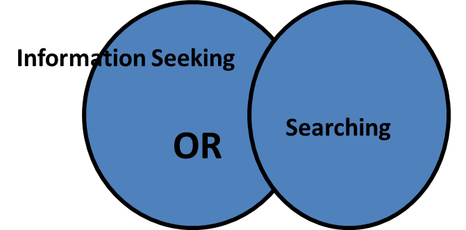
Operators: AND
Operators: NOT
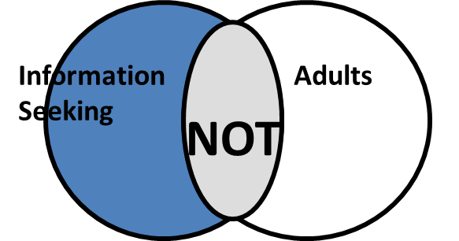
Step 6: Choose Database(s)
Familiarize self with databases and combination of databases
OU databases
Scope/coverage
Advanced Search pages, Thesauri, FAQs
What search features, operators (Boolean, proximity), IR methods (stemming, stopword lists, etc.) are available for the database
Thesaurus/Help Page
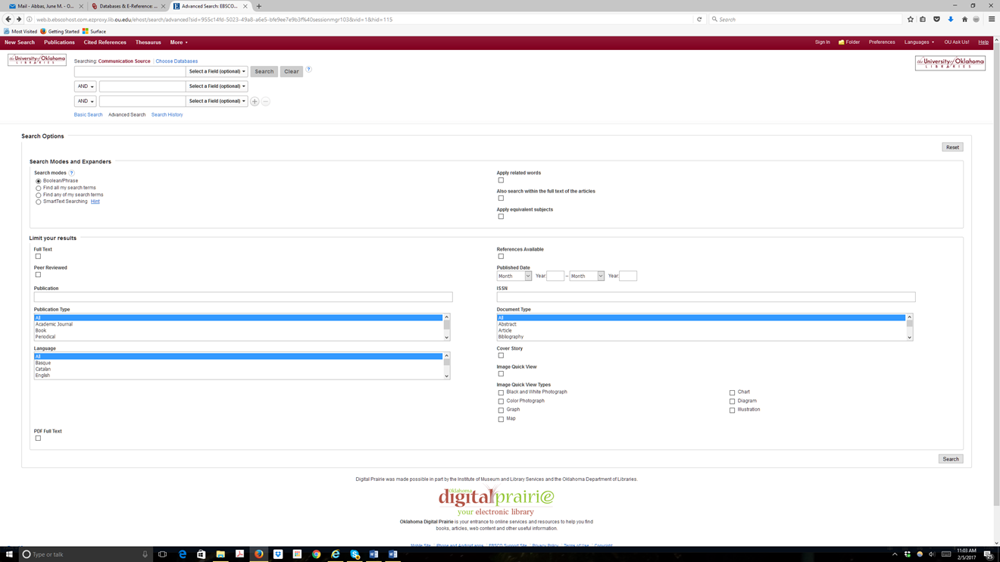
Example of Thesaurus
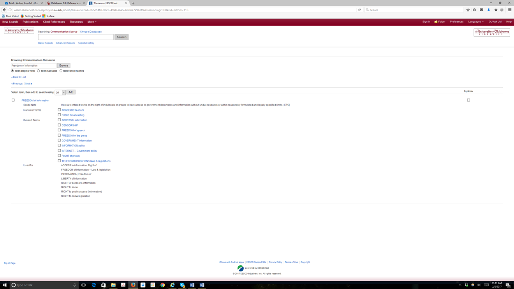
Thesaurus
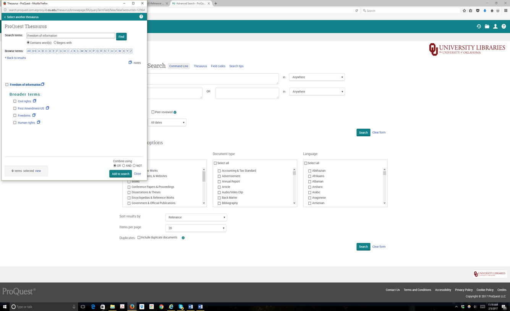
Thesaurus (Cont.)
Thesaurus (Cont.)
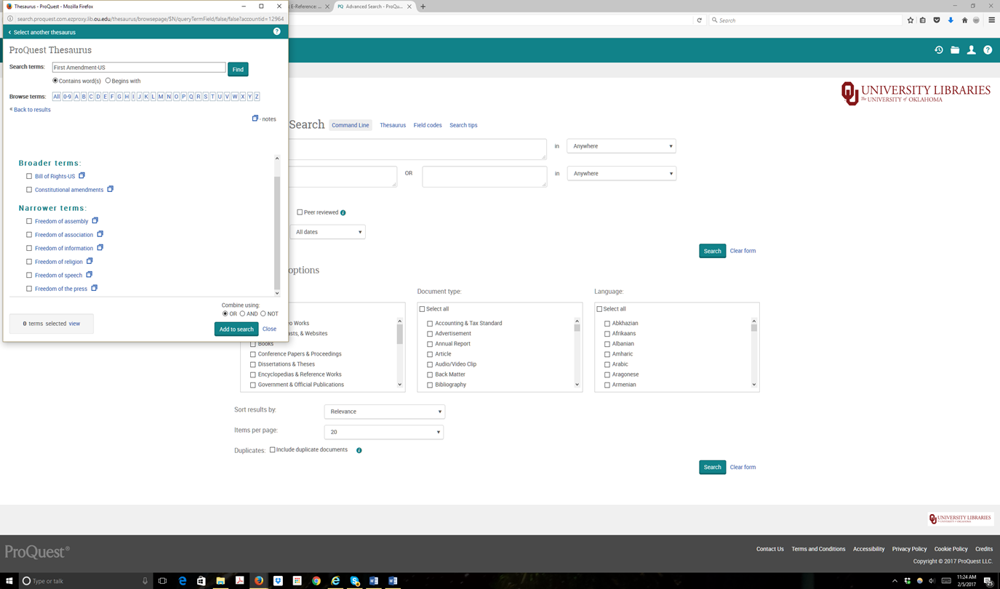
Example of Topic Search
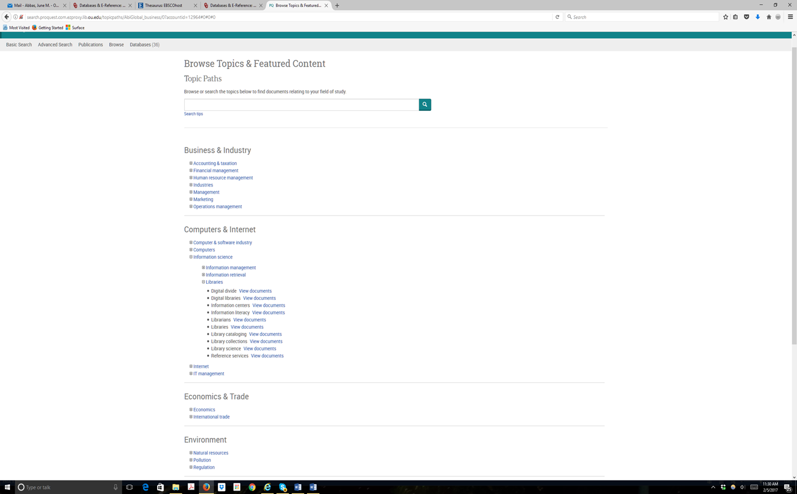
Results of Topic Search
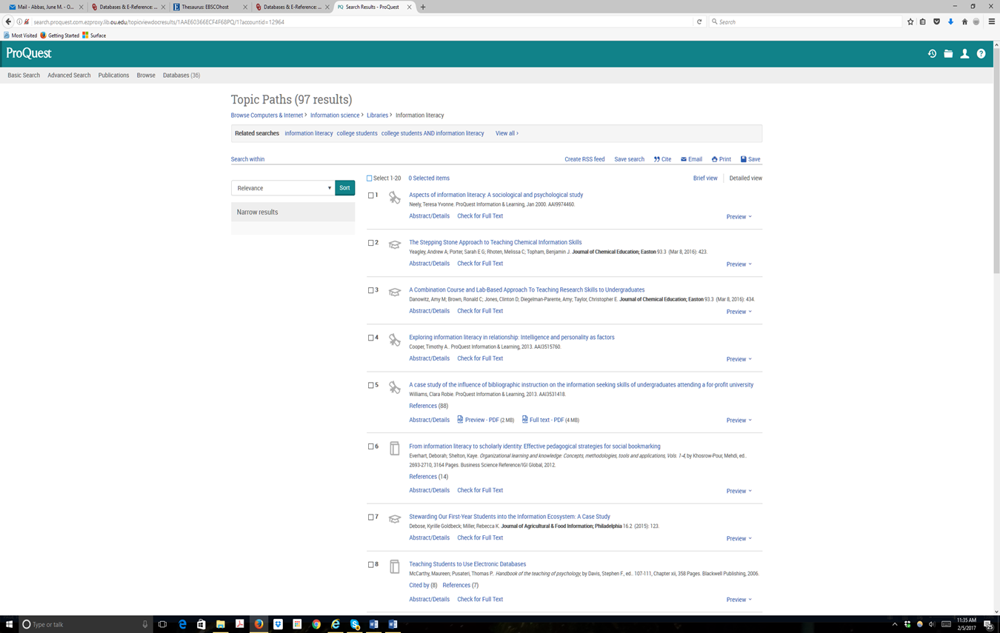
Wildcard and Truncation
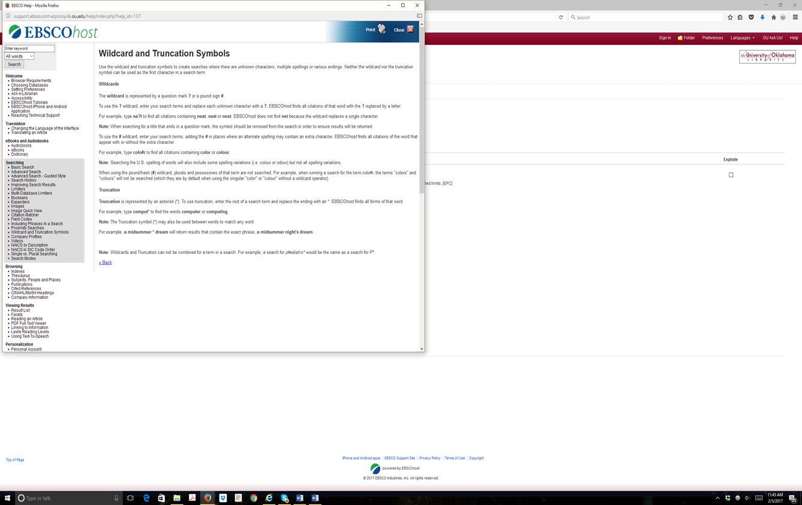
Truncation and Wildcards
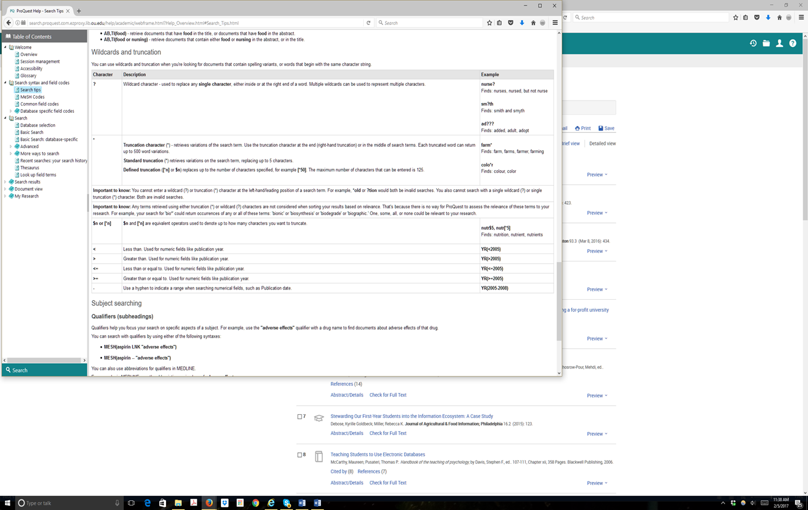
Proximity Searching
Stopwords, Phrases, Punctuation
Nesting (Not Just for Birds!)
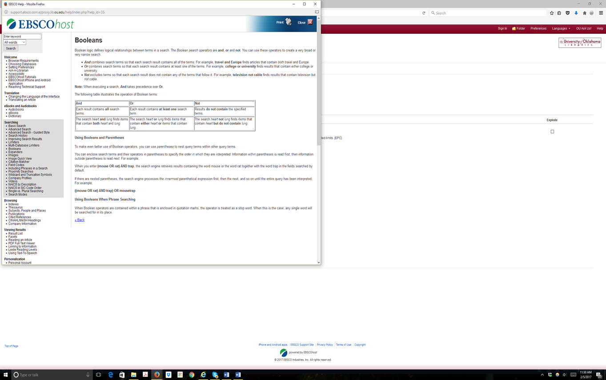
Indexes/Articles
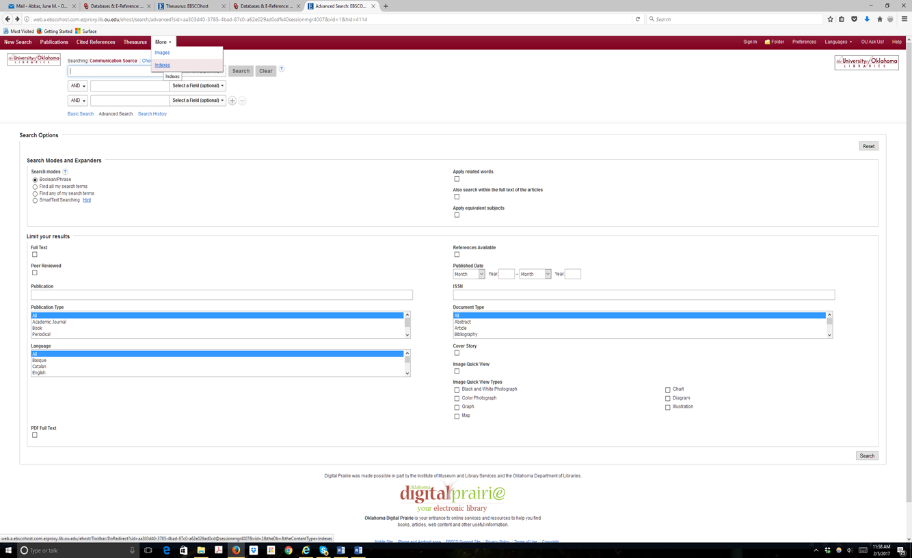
Indexes
Indexes/People
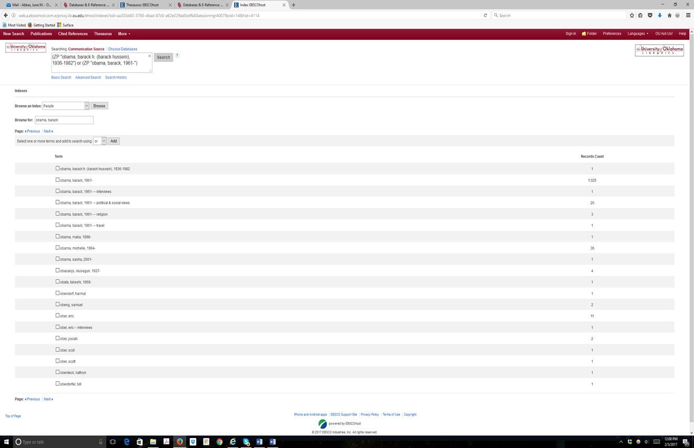
Indexes/People
Publication Search
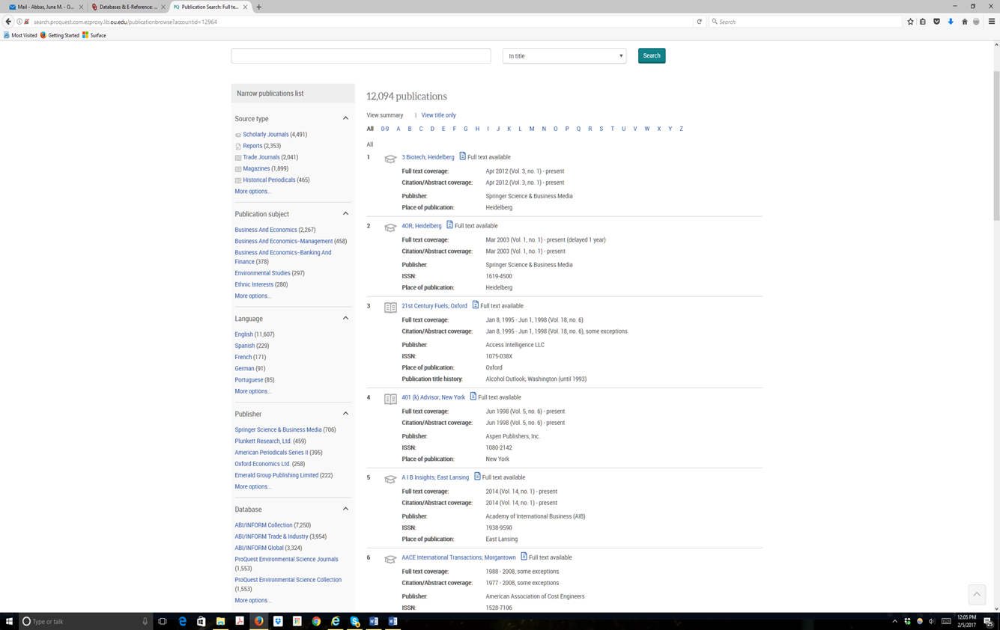
Step 7: Begin Search
Step 8: Review Results
Step 9: Revise and Refine Search
Step 9 (Cont.)
Step 10: Remain Focused
REMEMBER: It is possible that there are no documents that match your needs in that particular source. Review the question and re-evaluate your choice of source. Should you change databases? Go onto the Web? Online resources are fairly comprehensive, but they do not contain everything.